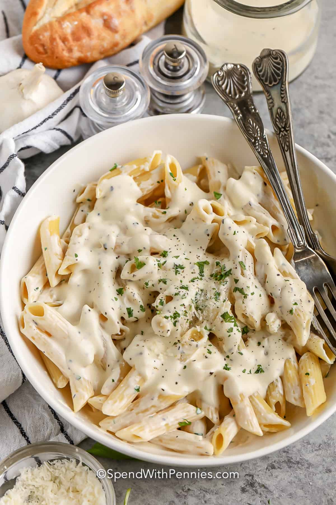

Cream Cheese Pasta Sauce

Description
Whisks down, this is the easiest pasta sauce recipe ever! This easy sauce
is made super easy with cream cheese, garlic, broth and seasonings with lots
of melty parmesan cheese! And it's just the right sauce for any shape of pasta!
Ingredients
- 1 tablespoon butter
- 3 cloves garlic minced
- ½ teaspoon dried basil
- ½ teaspoon onion powder
- 8 ounces cream cheese cubed
- ⅔ cup chicken broth or as needed
- ¼ cup parmesan cheese grated
- salt & pepper to taste
- pasta for serving
Steps
- Cook pasta according to package directions.
- While pasta is boiling, cook garlic in butter in a saucepan over medium
heat until fragrant, about 30 seconds. Add dried basil and onion powder.
Whisk in cream cheese until melted and smooth.
- Add chicken broth a little bit at a time and simmer 3-4 minutes or until
slightly thickened.
- Remove from heat and stir in parmesan cheese. Season with salt & pepper to
taste and serve over pasta.